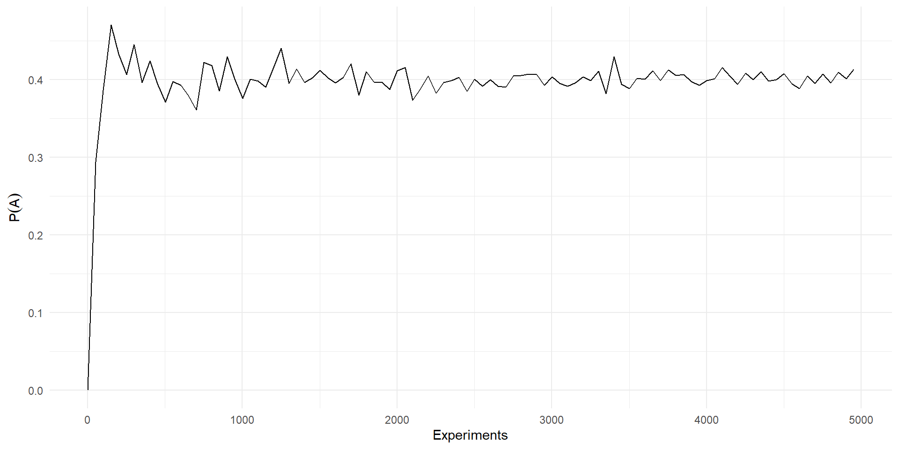
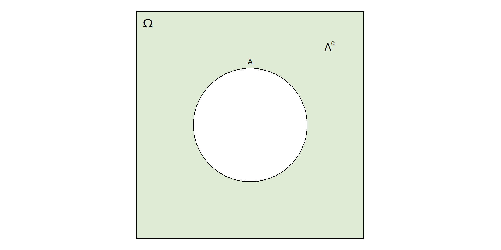

Introduction to Probability Theory
Lisbon Accounting and Business School – Polytechnic University of Lisbon
Probability, background
The concept
Consider the following scenario:
💼 Investor: What’s the probability this startup will succeed?
📊 Analyst: Hard to say—every startup is different.
💼 Investor: But if you had to guess, based on similar cases?
📊 Analyst: Maybe 1 in 3 succeed under these conditions.
💼 Investor: So, would you bet on it?
📊 Analyst: Yes, I would.
💼 Investor: Even if the odds aren’t great?
📊 Analyst: I believe this one has what it takes.
The concept
Here we can define probability in terms of frequency of occurrence, i.e. as a percentage of successes in a moderately large number of similar situations.
This is the most natural and traditional way of thinking about probability.
- Regarding a fair coin 🪙 we could say: “with probability 50% the coin lands on heads” meaning “roughly half of the time.”
But, what if this company belongs to a completely novel market sector?
The concept
There might be situations where the frequency concept is not adequate, because it might refer to a one-time event. These are subjective beliefs.
A company is recruiting a new CEO, and a board member says:
“I believe there’s a 90% chance that our chosen candidate will be an effective CEO.”
The concept
It might seem easy to disregard the second case as unscientific or useless. However, many times people need to make decisions under uncertainty with not enough data (or no data at all!) about previous realizations of the specific event.
Beliefs allow the decision maker to, well, make some decision, at least consistently.
What’s the difference between both situations?
What they do have in common?
Uncertainty
A refresh on Set Theory
Sets and elements
A set is a collection of objects, which are elements of the set.
Definition
Let \(S\) represent a set, and \(s\) an element of that set, we write \(s\in S\) to mean \(s\) belongs to \(S\).
If \(s\) does not belong to \(S\), we write \(s\notin S\).
Definition
If a set \(S\) does not have any element, then it is the empty set, denoted by \(\emptyset\).
Sets and Elements
Set

How to write down a Set
There are several ways to specify a set.
By extension, or as a list:
If a set \(S\) has a finite number of elements (\(x_i\in S\)) we can write it like this: \[S=\{x_1, x_2, ..., x_n\}\]
If a set \(S\) has an infinite (but countable) elements (\(x_i\in S\)) we can write it like: \[S=\{x_1, x_2, ...\}\]
How to write down a Set
By describing the property (\(P\)) that \(x\) must satisfy to be included in \(S\): \[S= \{x|x \text{ satisfies } P\}\] in this case \(|\) reads as such that. For example \[S=\{x\in\mathbb{R}|x>=0\}\] to describe the non-negative real numbers.
This example is special, as the positive real numbers cannot be written down as a a list. In this case the interval \([0,\infty)\) is an uncountable set.
More definitions
Definition
If \(\forall x\in S\) it is also true that \(x\in T\), then we say that \(S\) is a subset of \(T\), and we write it like \(S\subseteq T\).
Definition
If \(S\subseteq T\) and at the same time \(T\subseteq S\) then we say that \(S\) and \(T\) are equal, and we write it \(S=T\).
Definition
The universal set \(\Omega\) is the set that contains all objects that could conceivably be of interest in a particular context.
By definition the, any set \(S\) must be a subset of \(\Omega\).
More definitions
Subset \(S\subset T\)
More definitions
The universal set is important because it defines the scope of our analysis. Say we are studying the performance of students of Statistics I in 2025.
The cars parked outside our institution do not belong to the universal set, because they are not relevant for our purpose. Only students of Statistics I in 2025 belong to the universal set.
Set Operations
Definition
The complement of a set \(S\), with respect to \(\Omega\), is the set \(\{x\in\Omega| x\notin S\}\), that is, all the relevant elements that do not belong in \(S\). We denote it as \(S^c\).
Corollary: It is easy to see that \(\Omega^c=\emptyset\).
Set Operations
The complement
Set Operations
Definition
The union of two sets \(S\) and \(T\) is the set of all elements that belong to \(S\) or \(T\) (or both), and is denoted by \(S\cup T\). \[S\cup T=\{x\in\Omega | x\in S\ \vee\ x\in T\}\]
Definition
The intersection of two sets \(S\) and \(T\) is the set of all elements that belong to \(S\) and \(T\), and is denoted by \(S\cap T\). \[S\cap T=\{x\in\Omega | x\in S\wedge x\in T\}\]
Note that \(\vee\) stands for or, and \(\wedge\) stands for and.
Set Operations
Sometimes we might need to consider the union or intersection of many sets, and for that we can use a notation simmilar to the one we used for summations:
\[\bigcup_{n=1}^\infty S_n = S_1 \cup S_2 \cup ... = \{x\in\Omega | x \in S_n \text{ for some } n\}\]
\[\bigcap_{n=1}^\infty S_n = S_1 \cap S_2 \cap ... = \{x\in\Omega | x \in S_n \text{ for every } n\}\]
Set Operations
Definition
Two sets (say \(S\) and \(T\)) are said to be disjoint if \(S\cap T=\emptyset\).
More generally, a collection of sets \(S_n\) is disjoint if \(S_i\) and \(S_j\) are disjoint when \(i\neq j\).
Definition
A collection of sets is said to be a partition of a set \(S\) if the sets in the collection are:
Disjoint
Their union is \(S\)
Venn Diagrams
Statistics I